Trace and rank plots of MCMC draws. See the Plot Descriptions section, below, for details.
Usage
mcmc_trace(
x,
pars = character(),
regex_pars = character(),
transformations = list(),
...,
facet_args = list(),
n_warmup = 0,
iter1 = 0,
window = NULL,
size = NULL,
np = NULL,
np_style = trace_style_np(),
divergences = NULL
)
mcmc_trace_highlight(
x,
pars = character(),
regex_pars = character(),
transformations = list(),
...,
facet_args = list(),
n_warmup = 0,
window = NULL,
size = NULL,
alpha = 0.2,
highlight = 1
)
trace_style_np(div_color = "red", div_size = 0.25, div_alpha = 1)
mcmc_rank_overlay(
x,
pars = character(),
regex_pars = character(),
transformations = list(),
facet_args = list(),
...,
n_bins = 20,
ref_line = FALSE
)
mcmc_rank_hist(
x,
pars = character(),
regex_pars = character(),
transformations = list(),
...,
facet_args = list(),
n_bins = 20,
ref_line = FALSE
)
mcmc_rank_ecdf(
x,
pars = character(),
regex_pars = character(),
transformations = list(),
...,
K = NULL,
facet_args = list(),
prob = 0.99,
plot_diff = FALSE,
interpolate_adj = NULL
)
mcmc_trace_data(
x,
pars = character(),
regex_pars = character(),
transformations = list(),
...,
highlight = NULL,
n_warmup = 0,
iter1 = 0
)Arguments
- x
An object containing MCMC draws:
A 3-D array, matrix, list of matrices, or data frame. The MCMC-overview page provides details on how to specify each these.
A
drawsobject from the posterior package (e.g.,draws_array,draws_rvars, etc.).An object with an
as.array()method that returns the same kind of 3-D array described on the MCMC-overview page.
- pars
An optional character vector of parameter names. If neither
parsnorregex_parsis specified then the default is to use all parameters. As of version1.7.0, bayesplot also supports 'tidy' parameter selection by specifyingpars = vars(...), where...is specified the same way as in dplyr::select(...) and similar functions. Examples of usingparsin this way can be found on the Tidy parameter selection page.- regex_pars
An optional regular expression to use for parameter selection. Can be specified instead of
parsor in addition topars. When usingparsfor tidy parameter selection, theregex_parsargument is ignored since select helpers perform a similar function.- transformations
Optionally, transformations to apply to parameters before plotting. If
transformationsis a function or a single string naming a function then that function will be used to transform all parameters. To apply transformations to particular parameters, thetransformationsargument can be a named list with length equal to the number of parameters to be transformed. Currently only univariate transformations of scalar parameters can be specified (multivariate transformations will be implemented in a future release). Iftransformationsis a list, the name of each list element should be a parameter name and the content of each list element should be a function (or any item to match as a function viamatch.fun(), e.g. a string naming a function). If a function is specified by its name as a string (e.g."log"), then it can be used to construct a new parameter label for the appropriate parameter (e.g."log(sigma)"). If a function itself is specified (e.g.logorfunction(x) log(x)) then"t"is used in the new parameter label to indicate that the parameter is transformed (e.g."t(sigma)").Note: due to partial argument matching
transformationscan be abbreviated for convenience in interactive use (e.g.,transform).- ...
Currently ignored.
- facet_args
A named list of arguments (other than
facets) passed toggplot2::facet_wrap()orggplot2::facet_grid()to control faceting. Note: ifscalesis not included infacet_argsthen bayesplot may usescales="free"as the default (depending on the plot) instead of the ggplot2 default ofscales="fixed".- n_warmup
An integer; the number of warmup iterations included in
x. The default isn_warmup = 0, i.e. to assume no warmup iterations are included. Ifn_warmup > 0then the background for iterations1:n_warmupis shaded gray.- iter1
An integer; the iteration number of the first included draw (default is
0). This can be used to make it more obvious that the warmup iterations have been discarded from the traceplot. It cannot be specified ifn_warmupis also set to a positive value.- window
An integer vector of length two specifying the limits of a range of iterations to display.
- size
An optional value to override the default line size for
mcmc_trace()or the default point size formcmc_trace_highlight().- np
For models fit using NUTS (more generally, any symplectic integrator), an optional data frame providing NUTS diagnostic information. The data frame should be the object returned by
nuts_params()or one with the same structure. Ifnpis specified then tick marks are added to the bottom of the trace plot indicating within which iterations there was a divergence (if there were any). See the end of the Examples section, below.- np_style
A call to the
trace_style_np()helper function to specify arguments controlling the appearance of tick marks representing divergences (if thenpargument is specified).- divergences
Deprecated. Use the
npargument instead.- alpha
For
mcmc_trace_highlight(), passed toggplot2::geom_point()to control the transparency of the points for the chains not highlighted.- highlight
For
mcmc_trace_highlight(), an integer specifying one of the chains that will be more visible than the others in the plot.- div_color, div_size, div_alpha
Optional arguments to the
trace_style_np()helper function that are eventually passed toggplot2::geom_rug()if thenpargument is also specified. They control the color, size, and transparency specifications for showing divergences in the plot. The default values are displayed in the Usage section above.- n_bins
For the rank plots, the number of bins to use for the histogram of rank-normalized MCMC samples. Defaults to
20.- ref_line
For the rank plots, whether to draw a horizontal line at the average number of ranks per bin. Defaults to
FALSE.- K
An optional integer defining the number of equally spaced evaluation points for the PIT-ECDF. Reducing K when using
interpolate_adj = FALSEmakes computing the confidence bands faster. Forppc_pit_ecdfandppc_pit_ecdf_grouped, if PIT values are supplied, defaults tolength(pit), otherwise yrep determines the maximum accuracy of the estimated PIT values andKis set tomin(nrow(yrep) + 1, 1000). Formcmc_rank_ecdf, defaults to the number of iterations per chain inx.- prob
For
mcmc_rank_ecdf(), a value between 0 and 1 specifying the desired simultaneous confidence of the confidence bands to be drawn for the rank ECDF plots.- plot_diff
For
mcmc_rank_ecdf(), a boolean specifying if the difference between the observed rank ECDFs and the theoretical expectation should be drawn instead of the unmodified rank ECDF plots.- interpolate_adj
A boolean defining if the simultaneous confidence bands should be interpolated based on precomputed values rather than computed exactly. Computing the bands may be computationally intensive and the approximation gives a fast method for assessing the ECDF trajectory. The default is to use interpolation if
Kis greater than 200.
Value
The plotting functions return a ggplot object that can be further
customized using the ggplot2 package. The functions with suffix
_data() return the data that would have been drawn by the plotting
function.
mcmc_trace_data() returns the data for the trace and rank plots
in the same data frame.
Plot Descriptions
mcmc_trace()Standard trace plots of MCMC draws. For models fit using NUTS, the
npargument can be used to also show divergences on the trace plot.mcmc_trace_highlight()Traces are plotted using points rather than lines and the opacity of all chains but one (specified by the
highlightargument) is reduced.mcmc_rank_hist()Whereas traditional trace plots visualize how the chains mix over the course of sampling, rank histograms visualize how the values from the chains mix together in terms of ranking. An ideal plot would show the rankings mixing or overlapping in a uniform distribution. See Vehtari et al. (2019) for details.
mcmc_rank_overlay()Ranks from
mcmc_rank_hist()are plotted using overlaid lines in a single panel.mcmc_rank_ecdf()The ECDFs of the ranks from
mcmc_rank_hist()are plotted with the simultaneous confidence bands with a coverage determined byprob, that is, bands that completely cover all of the rank ECDFs with the probabilityprob. Ifplot_diff = TRUE, the difference between the observed rank ECDFs and the theoretical expectation for samples originating from the same distribution is drawn. See Säilynoja et al. (2021) for details.
References
Vehtari, A., Gelman, A., Simpson, D., Carpenter, B., Bürkner, P. (2019). Rank-normalization, folding, and localization: An improved R-hat for assessing convergence of MCMC. arXiv preprint.
Säilynoja, T., Bürkner, P., Vehtari, A. (2021). Graphical Test for Discrete Uniformity and its Applications in Goodness of Fit Evaluation and Multiple Sample Comparison arXiv preprint.
Examples
# some parameter draws to use for demonstration
x <- example_mcmc_draws(chains = 4, params = 6)
dim(x)
#> [1] 250 4 6
dimnames(x)
#> $Iteration
#> NULL
#>
#> $Chain
#> [1] "chain:1" "chain:2" "chain:3" "chain:4"
#>
#> $Parameter
#> [1] "alpha" "sigma" "beta[1]" "beta[2]" "beta[3]" "beta[4]"
#>
# trace plots of the betas
color_scheme_set("viridis")
mcmc_trace(x, regex_pars = "beta")
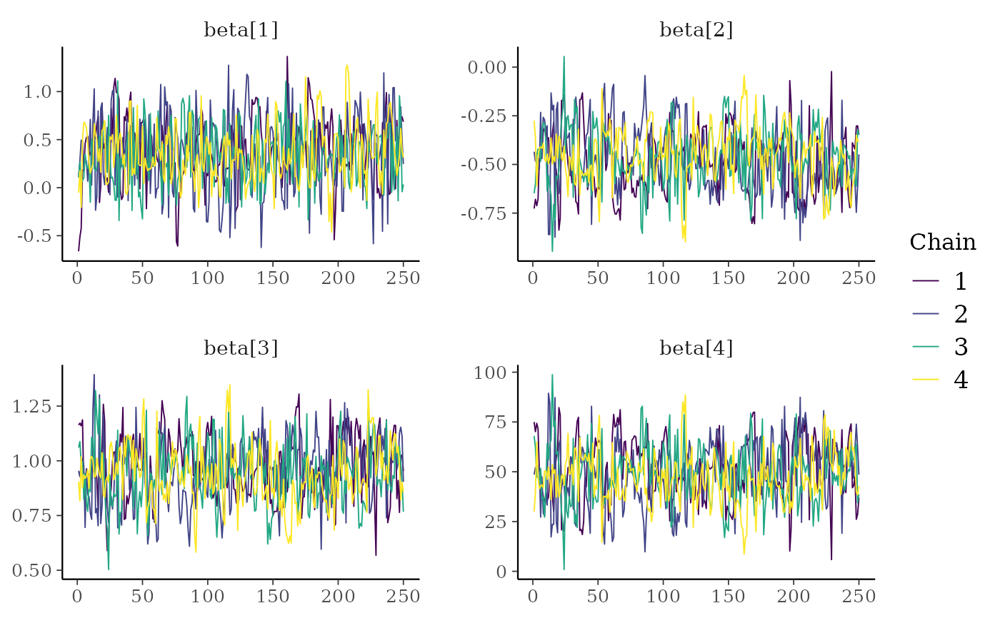
# \donttest{
color_scheme_set("viridisA")
mcmc_trace(x, regex_pars = "beta")
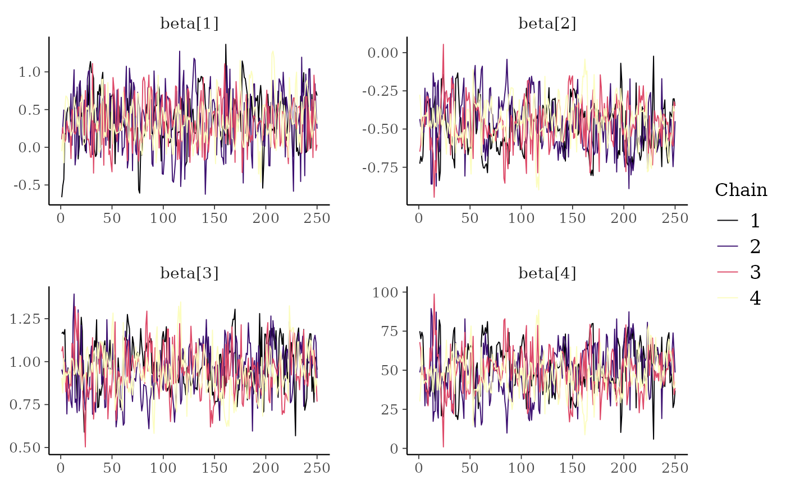
color_scheme_set("viridisC")
mcmc_trace(x, regex_pars = "beta")
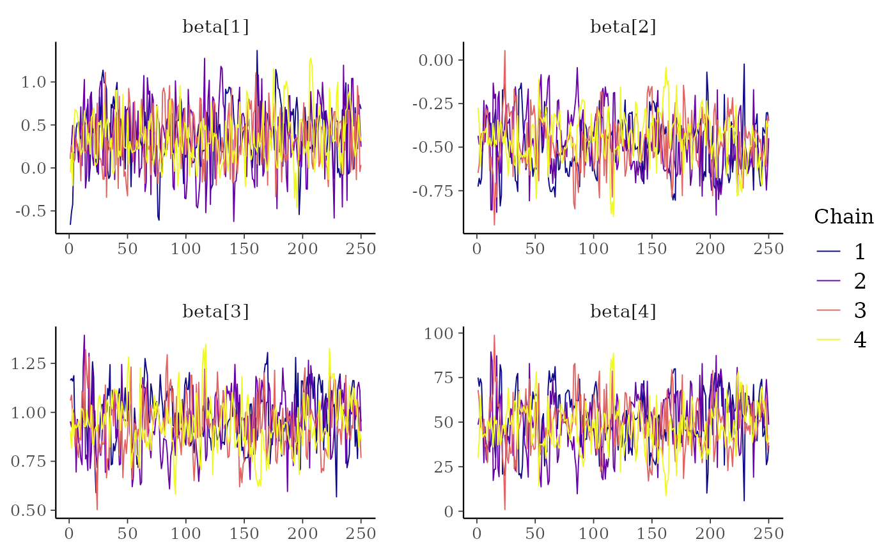
# }
# mix color schemes
color_scheme_set("mix-blue-red")
mcmc_trace(x, regex_pars = "beta")
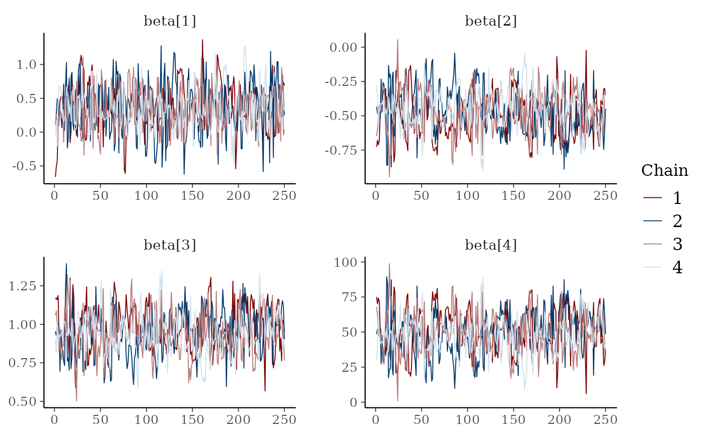
# use traditional ggplot discrete color scale
mcmc_trace(x, pars = c("alpha", "sigma")) +
ggplot2::scale_color_discrete()
#> Scale for colour is already present.
#> Adding another scale for colour, which will replace the existing scale.
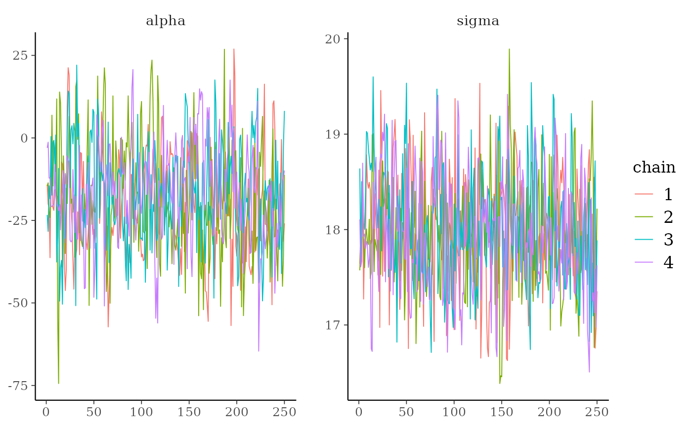
# zoom in on a window of iterations, increase line size,
# add tick marks, move legend to the top, add gray background
color_scheme_set("viridisA")
mcmc_trace(x[,, 1:4], window = c(100, 130), size = 1) +
panel_bg(fill = "gray90", color = NA) +
legend_move("top")
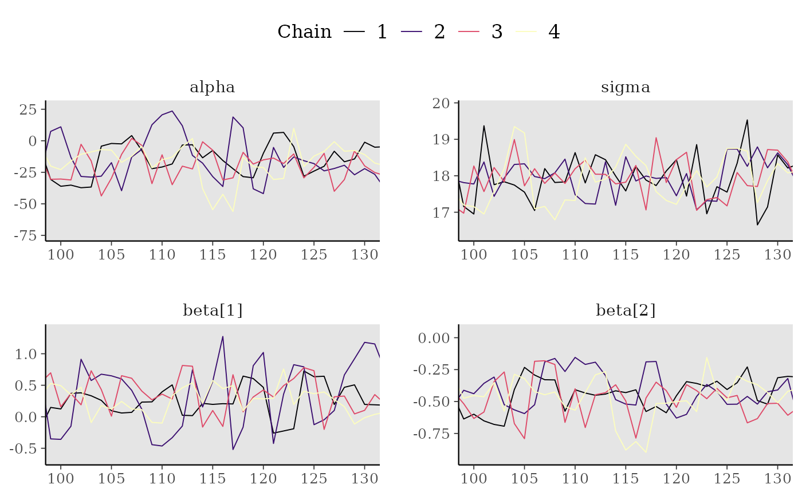
# Rank-normalized histogram plots. Instead of showing how chains mix over
# time, look at how the ranking of MCMC samples mixed between chains.
color_scheme_set("viridisE")
mcmc_rank_hist(x, "alpha")
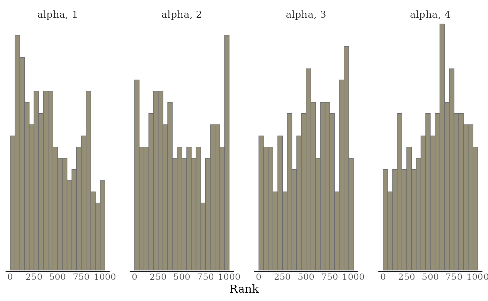
mcmc_rank_hist(x, pars = c("alpha", "sigma"), ref_line = TRUE)
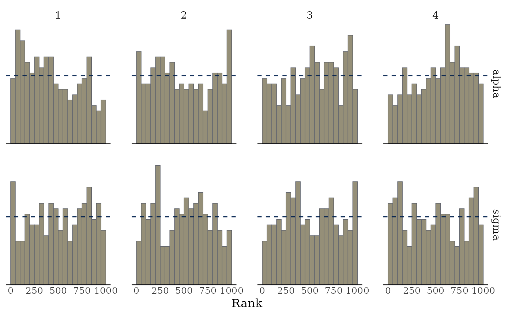
mcmc_rank_overlay(x, "alpha")
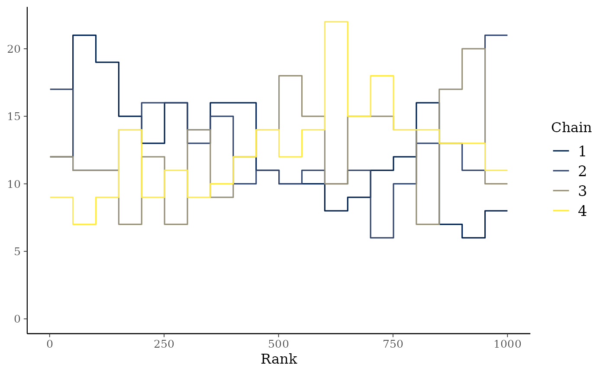
# ECDF and ECDF difference plots of the ranking of MCMC samples between chains.
# Provide 99% simultaneous confidence intervals for the chains sampling from
# the same distribution.
mcmc_rank_ecdf(x, prob = 0.99)
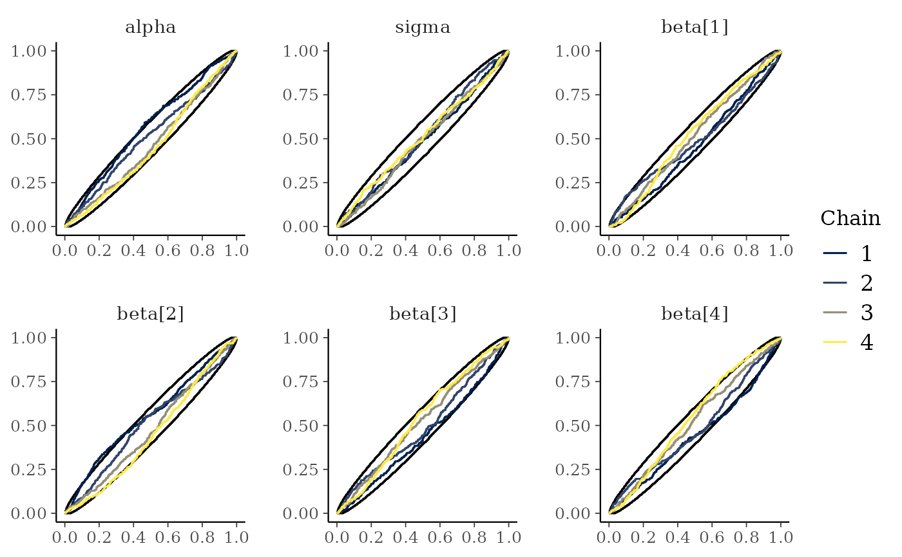
mcmc_rank_ecdf(x, prob = 0.99, plot_diff = TRUE)
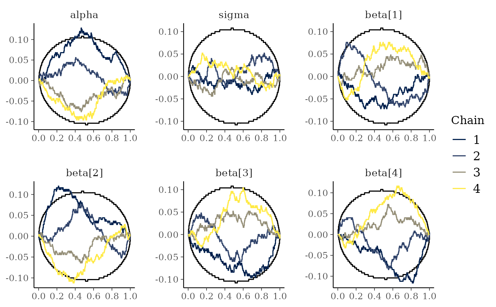
# \dontrun{
# parse facet label text
color_scheme_set("purple")
p <- mcmc_trace(
x,
regex_pars = "beta\\[[1,3]\\]",
facet_args = list(labeller = ggplot2::label_parsed)
)
p + facet_text(size = 15)
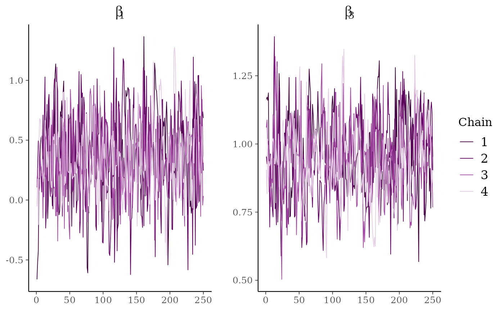
# mark first 100 draws as warmup
mcmc_trace(x, n_warmup = 100)
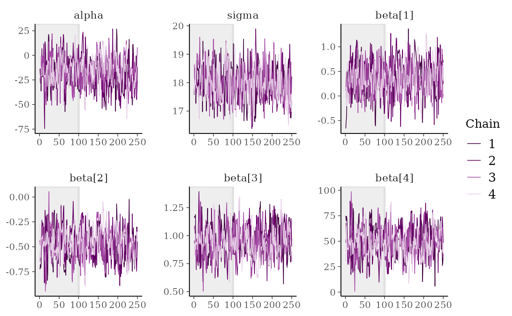
# plot as points, highlighting chain 2
color_scheme_set("brightblue")
mcmc_trace_highlight(x, pars = "sigma", highlight = 2, size = 2)
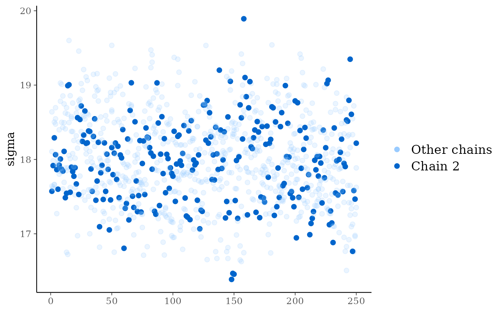
# for models fit using HMC/NUTS divergences can be displayed in the trace plot
library("rstanarm")
fit <- stan_glm(mpg ~ ., data = mtcars, refresh = 0,
# next line to keep example fast and also ensure we get some divergences
prior = hs(), iter = 400, adapt_delta = 0.8)
#> Warning: There were 26 divergent transitions after warmup. See
#> https://mc-stan.org/misc/warnings.html#divergent-transitions-after-warmup
#> to find out why this is a problem and how to eliminate them.
#> Warning: Examine the pairs() plot to diagnose sampling problems
#> Warning: Bulk Effective Samples Size (ESS) is too low, indicating posterior means and medians may be unreliable.
#> Running the chains for more iterations may help. See
#> https://mc-stan.org/misc/warnings.html#bulk-ess
#> Warning: Tail Effective Samples Size (ESS) is too low, indicating posterior variances and tail quantiles may be unreliable.
#> Running the chains for more iterations may help. See
#> https://mc-stan.org/misc/warnings.html#tail-ess
# extract draws using as.array (instead of as.matrix) to keep
# chains separate for trace plot
posterior <- as.array(fit)
# for stanfit and stanreg objects use nuts_params() to get the divergences
mcmc_trace(posterior, pars = "sigma", np = nuts_params(fit))
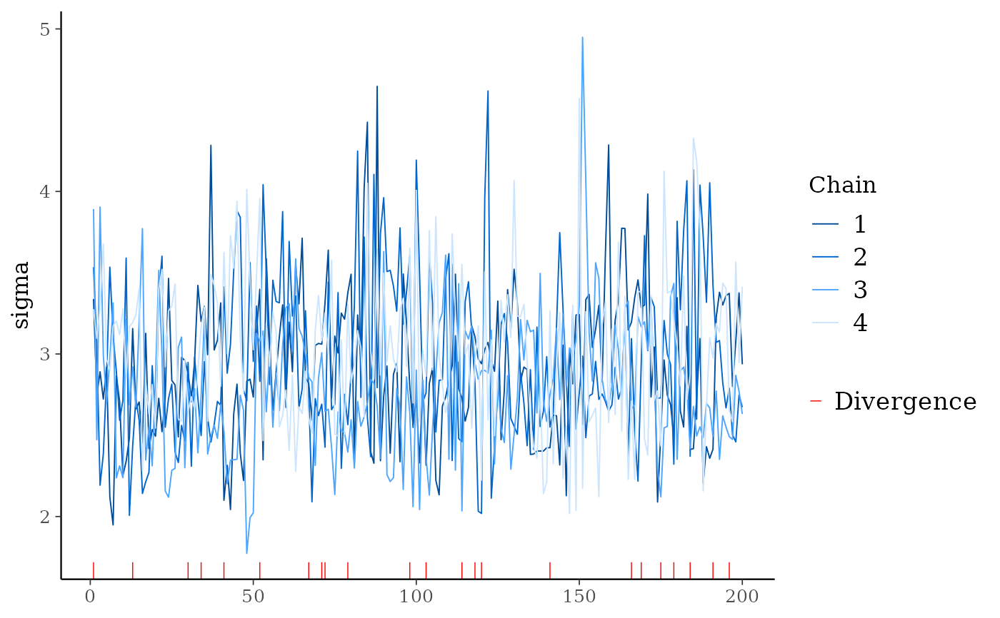
color_scheme_set("viridis")
mcmc_trace(
posterior,
pars = c("wt", "sigma"),
size = 0.5,
facet_args = list(nrow = 2),
np = nuts_params(fit),
np_style = trace_style_np(div_color = "black", div_size = 0.5)
)
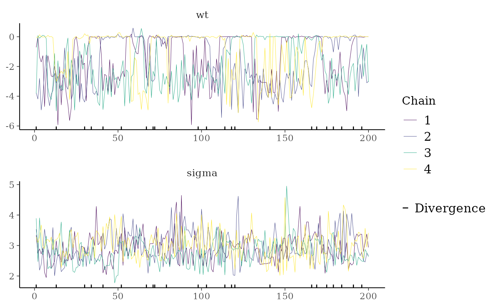
# }